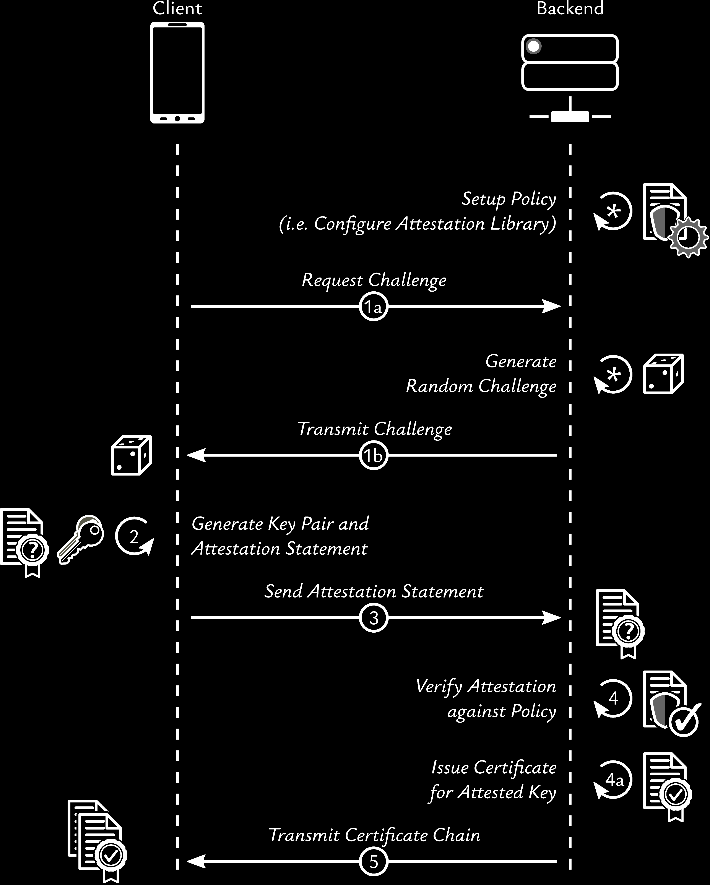

Warden Supreme Integration


Warden Supreme is a fully integrated key and app attestation suite with three components:
- A mobile client library (iOS and Android) to generate attestation statements
- A unified server-side key and app attestation verification library
- Agnostic communication logic for process flows and the wire format
Bugs Ahead!
Several devices and OS versions in the field come with bugs and quirks. Warden Supreme's docs hub discusses them here. Be sure to read up on them before integrating attestation into your services.
Warden Supreme combines the server-side lineage of WARDEN with Signum's Supreme KMP crypto provider to provide the same client API on Android and iOS. The original server-side-only key and app attestation library is still available and actively maintained, as it is one of the pillars supporting Warden Supreme. It now lives on as Warden makoto and continues to be published to Maven Central.
Using Warden Supreme in Your Projects
Warden Supreme targets Android and iOS clients and JVM-based back-ends. Warden Supreme currently uses HTTP for communication and Ktor on mobile clients. The back-end can use Spring, Ktor, or another HTTP framework.
- On the back-end, add the
verifierdependency: - On mobile clients, add the
clientdependency:
High-Level Attestation Flow
Figure 1 shows the attestation flow:
- The client fetches a challenge from the back-end.
- The client prepares the TBS CSR data and feeds either the server nonce or a hash of that data into hardware-backed key generation to create an attestation statement.
- The client sends the challenge-selected attestation proof back to the back-end.
DataAuthentication.Signature(the default) sends a complete signed CSR and therefore proves possession of the attested private key.DataAuthentication.Hashsends an unsigned TBS CSR. Its version, subject, extensions, and all non-proof attributes are bound through a canonical DER hash used as the platform attestation nonce. This mode deliberately provides no proof of possession.- Both modes carry the attestation statement in a custom TBS CSR attribute and can bind required or optional client-provided attributes.
- The public key cannot be part of the pre-generation hash, so the verifier separately requires it to equal the key proven by the platform attestation.
- The back-end verifies the attestation statement against a predefined policy.
- If the attestation is considered valid, the back-end issues a certificate for the attested key, thus vouching for the integrity of the client.
- If the attestation does not verify, the back-end records the reason for this failure.
- The back-end responds either with the full certificate chain (success) or a detailed error reason (failure).
Choosing an Authentication Mode
Use signature mode when the ceremony must prove that the client can operate the attested private key at that moment. This is the default. If key use requires biometric or device authentication, creating the CSR signature may display the configured authentication prompt.
Use hash mode when binding the request data and attested key is sufficient and an immediate private-key operation is undesirable. Hash mode authenticates the TBS CSR contents but is not a proof of possession. A valid platform attestation still proves how and where the key was generated, and the verifier still matches that attested key to the TBS CSR public key.
The modes are not interchangeable: the verifier rejects a signed CSR for a hash challenge and an unsigned TBS CSR for a signature challenge.
Requesting Client-Provided Attributes
The verifier can place a CertificationRequestAttributeAttestationDescriptor in a challenge. It contains a dedicated
attribute OID and an ordered list of AttributeAttestationDescriptor(name, type, required) entries. The client callback
receives that list and returns one Primitive per entry. Required values must be present; optional values can be null.
These values are produced by the app, not independently certified by Android or Apple. Successful verification means the expected app supplied them and the selected authentication mode bound them into this ceremony. Both signature and hash mode bind the same attribute sequence.

The server must be configured before it can evaluate a client. Android and iOS use the same client and verifier APIs, while their policy configuration remains separate because the platforms expose different evidence.
Warden Supreme Step-by-Step Guide
Note
The Warden Supreme verifier does not ship with a crypto provider! Still, this example assumes Signum Supreme for brevity.
Warden Supreme integrates server-side and client-side logic into a lean interface.
This interface covers the ceremony from challenge issuance through verification and certificate issuance. The following setup uses a Ktor back-end and a KMP client; the verifier itself is not tied to either choice.
- Decide on HTTPS endpoints to issue challenges and verify attestation statements, and record the app identifiers and signer digests (Android) / team ID (iOS).
- Back-end:
- Configure a
Makotoinstance based on your policy and app identifiers. - Create an
AttestationVerifierbased on the configuredMakotoinstance, your CA certificate, and signing keys. - Wire HTTPS endpoints to the
AttestationVerifierand start an HTTP server.
- Configure a
- Mobile app:
- Wire the verifier to the HTTPS endpoints in an
AttestationClient. - Call the endpoints.
- Store the received certificate chain after a successful attestation.
- Wire the verifier to the HTTPS endpoints in an
Migration Info
Warden Supreme 0.9.99 revamped trust anchor management and thus changed configuration parameters.
Attestation Policy Configuration
Since Android and iOS attestation require different configuration parameters, distinct configuration classes exist. The following snippet shows an MWE that also accounts for five minutes of clock drift:
val makoto = Makoto(
androidAttestationConfiguration = AndroidAttestationConfiguration(
/*(1)!*/AndroidAttestationConfiguration.AppData(
packageName = "at.asitplus.attestation_client",
signerFingerprints = setOf("34 b9 76 2c 4d 6c 90 d4 84 31 94 0c 57 bd e7 31 42 58 b2 64 20 ec".parseHex())
)
),
iosAttestationConfiguration = IosAttestationConfiguration(
/*(2)!*/IosAttestationConfiguration.AppData(
teamIdentifier = "9CYHJNG644",
bundleIdentifier = "at.asitplus.attestation-client",
)
)
)
- At least package identifier and a single signer digest need to be configured for an Android application to be attested.
- The combination of package identifier and signature digest fully identify an Android application and make it possible to attest its authenticity.
- For production apps distributed through the Google Play Store, this is the digest of a Google cloud signing certificate.
- An iOS application is uniquely identified by a bundle identifier and a team ID.
This combination makes it possible to attest its authenticity.
With great power comes great responsibility!
The example above is deliberately minimal. Many more configuration properties exist. Explicitly set all properties relevant to your scenario after considering the intended audience and required security properties.
Warden Supreme, by definition, cannot take these decisions from you!
The API documentation describes every configuration property; the expandable example below shows them together. Be sure to read up on Clock drift issues before tweaking properties!
Comprehensive example of Makoto config options
The below config illustrates configuring two different Android apps: a regular one for the masses and a second one with much tighter security constraints. This makes no sense when Warden Supreme is integrated into a back-end. If, however, a dedicated attestation service is deployed that is then used to issue certificates for apps used by different services, this can be legitimate. A single iOS-app is configured for test purposes only. In this example, the iOS app has not yet launched and is purely simulated. To still be able to test the attestation code path for iOS, custom trusted roots are set and all iOS attestation statements sent to the back-end are created in software, purely for evaluation purposes.
Be sure to check the annotations!
val makoto = Makoto(
androidAttestationConfiguration = AndroidAttestationConfiguration(
/*(1)!*/applications = listOf(
AndroidAttestationConfiguration.AppData(
packageName = "at.asitplus.attestation_client",
signerFingerprints = setOf("34 b9 76 2c 4d 6c 90 d4 84 31 94 0c 57 bd e7 31 42 58 b2 64 20 ec".parseHex()),
),
/*(2)!*/AndroidAttestationConfiguration.AppData(
/*(3)!*/packageName = "at.asitplus.attestation_client-hardened",
signerFingerprints = setOf("34 b9 76 2c 4d 6c 90 d4 84 31 94 0c 57 bd e7 31 42 58 b2 64 20 ec".parseHex()),
/*(4)!*/appVersion = 2,
/*(5)!*/androidVersionOverride = 160000,
patchLevelOverride = PatchLevel(year = 2025, month = 9,
/*(6)!*/maxFuturePatchLevelMonths = 2
),
/*(7)!*/requireRemoteKeyProvisioningOverride = true,
/*(8)!*/trustedRootOverrides = setOf(GOOGLE_RKP_EC_ROOT),
/*(9)!*/requireStrongBoxOverride = true,
/*(10)!*/customProperties = mapOf("an app flag" to "is present"),
)
),
/*(11)!*/androidVersion = 130000, patchLevel = PatchLevel(2023, 12),
requireStrongBox = false,
allowBootloaderUnlock = false, //DEFAULT
/*(12)!*/verifiedBootKeys = linkedSetOf(
VerifiedBootKey.OEM,
VerifiedBootKey.Digest(
"00 11 22 33 44 55 66 77 88 99 aa bb cc dd ee ff 00 11 22 33 44 55 66 77 88 99 aa bb cc dd ee ff".parseHex()
)
),
/*(13)!*/requireRollbackResistance = false, //DEFAULT
/*(14)!*/ignoreLeafValidity = false, // defaults to true
/*(15)!*/hardwareTrustedRoots = GOOGLE_DEFAULT_HARDWARE_TRUST_ANCHORS, //DEFAULT
softwareTrustedRoots = GOOGLE_SOFTWARE_TRUST_ANCHORS_UNTIL_A12, //DEFAULT
verificationSecondsOffset = 0, //DEFAULT; Android-only clock-drift adjustment in seconds
disableHardwareAttestation = false,
enableSoftwareAttestation = false, //DEFAULT
/*(16)!*/attestationStatementValiditySeconds = null, // DEFAULT; no validity time checks!
/*(17)!*/revocation = listOf(
AndroidRevocationList.GoogleDefaultLoaderConfig.withHttpProxy("https://192.168.178.74:8000")
),
requireRemoteKeyProvisioning = false, //DEFAULT
/*(18)!*/enforceFactoryProvisionedChainValidity = true, //DEFAULT
/*(19)!*/customProperties = mapOf("an Android flag" to "is present") //DEFAULT
),
iosAttestationConfiguration = IosAttestationConfiguration(
/*(20)!*/applications = listOf(
IosAttestationConfiguration.AppData(
teamIdentifier = "9CYHJNG644",
bundleIdentifier = "at.asitplus.attestation-client",
/*(21)!*/iosVersionOverride = OsVersions("16.0", "20A10"),
/*(22)!*/sandbox = true, //defaults to false
/*(23)!*/trustedRootOverrides = myCustomRoots,
/*(24)!*/ customProperties = mapOf("and iOS flag" to "is present"),
)
),
/* Same as 17.0 ↘↘ */
/*(25)!*/iosVersion = OsVersions("17", "21A36"), //defaults to null (= no version check)
/*(26)!*/attestationStatementValiditySeconds = 600, //DEFAULT
/*(27)!*/trustedRoots = APPLE_DEFAULT_TRUSTED_ROOTS, //DEFAULT
/*(28)!*/customProperties = mapOf("a global iOS flag" to "is present"), //DEFAULT
),
clock = Clock.System, //DEFAULT
/*(29)!*/verificationTimeOffset = 5.minutes, //OPTIONAL, defaults shown
)
- The ordered list may contain more than one app. Each Android entry requires a package name and one or more SHA-256 signer fingerprints. For production apps distributed through Google Play, use the fingerprint of the Google cloud signing certificate.
- A second, experimental high-security app demonstrates configuring multiple applications.
- Different package name from the first app
- Enforce a minimum app version.
- These values replace the global minimum OS and security-patch requirements for this app. Android major versions
use steps of 10,000, so Android 16 is
160000; patch levels use a four-digit year and numeric month. - Security patch levels this many months in the future are tolerated.
- Only remote key provisioning is considered trustworthy for this app
- The global hardware and software trust anchors are discarded for this app; only the configured RKP root is trusted here.
- The app's key is required to use Android StrongBox.
- We want to mark the hardened app. We can use a
Map<String,String>to attach arbitrary properties to the attestation configuration. See below for an example that reads those out. - These are the global defaults. Here Android 13 with a minimum December 2023 patch level is required, while StrongBox remains optional. The second app overrides these values.
- Allow OEM-managed
VERIFIEDboot and one pinnedSELF_SIGNEDverified boot key for locked devices only. OmitOEMif you want to trust only explicitly pinned custom ROM keys. This has no effect once unlocked bootloaders are allowed. - Rollback resistance is unsupported by many devices and is disabled by default. See the Android documentation.
- Timely leaf-certificate validity is ignored by default, because some implementations produce incorrectly dated
leaf certificates. Set the shown value to
falseto enforce it. Challenge validation still ensures freshness. - The two sets replace the global hardware and software trust anchors, respectively. Hardware verification can be disabled; software-only attestation can be permitted as a fallback and is primarily useful for test devices and emulators.
- This limits the age of the statement, not the certificate. The default
nulldisables this age check; challenge validation still ensures freshness. - Required if you run Warden behind a proxy to fetch revocation information from Google servers.
- Factory-provisioned Android attestation chains are checked for timely certificate validity by default. It is safe to disable this when using the default Google hardware roots of trust as per the official documentation.
- We want to attach a
Map<String, String>with a single entry. Can be extended arbitrarily. See below for an example that reads those out. - The ordered iOS list may also contain more than one app. Each entry is identified by its team and bundle identifiers.
- This sets the app's minimum iOS version using both a SemVer value and an Apple build number. For build-number details, see this explanation by David Shayer.
- The shown value selects Apple's sandbox environment; production is the default.
- The global Apple trust-anchor pairs are replaced for this app. Custom roots enable generating iOS attestation statements in software for evaluation.
- We want to mark the iOS app. We can use a
Map<String,String>to attach arbitrary properties to the attestation configuration. See below for an example that reads those out. - The global minimum iOS version also contains both a SemVer value and build number. The default
nullperforms no minimum-version check; an app-specific value takes precedence. - This sets the maximum accepted statement age. The default is Apple's recommendation plus five minutes.
- These replace the global Apple attestation and receipt trust-anchor pairs; production roots are the default.
- We want to attach a
Map<String, String>with a single entry. Can be extended arbitrarily. - Account for clock drift throughout the integrated configuration. iOS checks use the clock plus this offset. Android checks use the clock plus this offset and the Android-specific offset in seconds; the offsets are added together.
Be sure to check out Externalising Configuration for serialized (YAML + JSON) configuration examples!
Pinned SELF_SIGNED Android boot keys
If you need to trust a known-good custom Android build, configure verifiedBootKeys. The default [OEM] accepts
vendor-managed VERIFIED boot, [OEM, "<hex>"] accepts either vendor-managed VERIFIED boot or an explicitly
whitelisted SELF_SIGNED key, and ["<hex>"] accepts only explicitly whitelisted SELF_SIGNED keys. Keep
allowBootloaderUnlock = false, otherwise bootloader-lock, verified boot state, and verified boot key checks are
skipped entirely.
For an iOS-only or Android-only deployment, omit androidAttestationConfiguration or
iosAttestationConfiguration, respectively. Verification for an unconfigured platform always returns an error.
The shorthand AttestationVerifier constructor that directly accepts androidAttestationConfiguration and iosAttestationConfiguration properties
instead of a pre-configured Makoto instance does not support such omissions.
Accepting Expired Non-RKP Certificate Chains
As of May 2026, the intermediate certificates and roots of some old non-RKP devices — that is, devices no longer receiving security updates — have expired.
Warden Supreme considers such devices insecure by default, which is consistent with its checking timely certificate validity by default.
For some devices there is no way to update these certificate chains to fix the validity issue; for others, the OEMs simply don't care.
If you must support these devices, you can disable timely certificate validity checks for non-RKP devices only.
To do so, set enforceFactoryProvisionedChainValidity = false in the AndroidAttestationConfiguration. See the full example of Makoto config options for details.
Google Pixel 6 Series
As of July 2026, the Google Pixel 6 series still received security updates, but still ships with an expired certificate chain.
Trusting GrapheneOS
A practical example of pinning SELF_SIGNED verified boot keys is GrapheneOS. To obtain current GrapheneOS verified
boot key hashes, use GrapheneOS's
attestation.json and verify it against the detached signature at
attestation.json.sig.
val grapheneOsVerifiedBootKeys = setOf(
"d8f879d10419eddc9fcda6280718be763f6bf12299e1f72df3ea8ad8a8eb7f80",
"55a2d44103e56d5ec65496399c417987ba77730e6488fc60ba058d09fc3caee3",
"141d7fc32af7958a416f2661b37cf6f27bfb376fb5ce616aeaa27a82c7a04f74",
"4e8ee8f717754052198ca6d2d3aaa232e2461b4293c0d6f297e519cc778de093",
"3f7415ea26f5df5b14ea6d153256071a7a1af9ce7b0970b7311cc463c7ea02c7",
"0508de44ee00bfb49ece32c418af1896391abde0f05b64f41bc9a2dfb589445b",
"af4d2c6e62be0fec54f0271b9776ff061dd8392d9f51cf6ab1551d346679e24c",
"55d3c2323db91bb91f20d38d015e85112d038f6b6b5738fe352c1a80dba57023",
"f729cab861da1b83fdfab402fc9480758f2ae78ee0b61c1f2137dd1ab7076e86",
"9e6a8f3e0d761a780179f93acd5721ba1ab7c8c537c7761073c0a754b0e932de",
"096b8bd6d44527a24ac1564b308839f67e78202185cbff9cfdcb10e63250bc5e",
"896db2d09d84e1d6bb747002b8a114950b946e5825772a9d48ba7eb01d118c1c",
"cd7479653aa88208f9f03034810ef9b7b0af8a9d41e2000e458ac403a2acb233",
"ee0c9dfef6f55a878538b0dbf7e78e3bc3f1a13c8c44839b095fe26dd5fe2842",
"94df136e6c6aa08dc26580af46f36419b5f9baf46039db076f5295b91aaff230",
"508d75dea10c5cbc3e7632260fc0b59f6055a8a49dd84e693b6d8899edbb01e4",
"bc1c0dd95664604382bb888412026422742eb333071ea0b2d19036217d49182f",
"3efe5392be3ac38afb894d13de639e521675e62571a8a9b3ef9fc8c44fd17fa1",
"08c860350a9600692d10c8512f7b8e80707757468e8fbfeea2a870c0a83d6031",
"439b76524d94c40652ce1bf0d8243773c634d2f99ba3160d8d02aa5e29ff925c",
"f0a890375d1405e62ebfd87e8d3f475f948ef031bbf9ddd516d5f600a23677e8"
).map { VerifiedBootKey.Digest(it.parseHex()) }.toSet() /*(1)!*/
val grapheneOsConfig = SupremeConfiguration(
AndroidAttestationConfiguration(
AndroidAttestationConfiguration.AppData(
packageName = androidAppPackage,
signerFingerprints = setOf(appSignerFingerprint)
),
verifiedBootKeys = grapheneOsVerifiedBootKeys
+ VerifiedBootKey.OEM /*(2)!*/
,
allowBootloaderUnlock = false /*(3)!*/
)
)
- Order is irrelevant, and Warden Supreme makes this explicit by forcing a
Setof verified boot key hashes - Also keep
OEMso stock/vendor Android trusted, while pinning all GrapheneOS verified boot keys. - Keep
allowBootloaderUnlock = false(which is the default). Otherwise, bootloader-lock, verified boot state, and verified boot key checks are skipped entirely.
The concrete digests pinned in the example above were retrieved on 2026-06-15. Do fetch and verify them yourself, if you want to trust GrapheneOS
Attaching Custom Configuration Properties
Warden Supreme defines a canonical configuration format with custom loaders for Spring Boot and Hoplite (see Externalising Configuration). This removes the need for any custom configuration parsing. Still, you may want to attach arbitrary configuration properties to an application's attestation configuration, or globally to the configuration subtree dedicated to attestation configuration.
To keep canonical parsing while still allowing such extensions, you can attach
mappings of string keys to string values under customProperties at the following layers:
AndroidAttestationConfigurationAndroidAttestationConfiguration.AppDataIosAttestationConfigurationIosAttestationConfiguration.AppData
A map of string keys to string values has well-defined parsing behaviour and can be extended at will. If you need to attach complex structures, serialise them to a string and deserialise them before use.
Reading Custom Properties
Read them like any other Kotlin map. Select the matching application before reading app-specific values:
val androidFlag = makoto.androidAttestationConfiguration
?.customProperties?.get("an Android flag")
val androidAppFlag = makoto.androidAttestationConfiguration
?.applications
?.firstOrNull { it.packageName == "at.asitplus.attestation_client-hardened" }
?.customProperties?.get("an app flag")
val iosFlag = makoto.iosAttestationConfiguration
?.customProperties?.get("a global iOS flag")
val iosAppFlag = makoto.iosAttestationConfiguration
?.applications
?.firstOrNull { it.bundleIdentifier == "at.asitplus.attestation-client" }
?.customProperties?.get("and iOS flag")
A missing configuration, application, or key produces null in this example.
A Note on Android Attestation
This library allows combining different flavours of Android attestation, ranging from full hardware attestation
to (rather useless in practice) software-only attestation, which can be useful for testing using an Android emulator.
Hardware attestation is enabled by default, while hybrid and software-only attestation needs to be explicitly enabled.
Doing so will chain the corresponding
AndroidAttestationCheckers from the strictest (hardware) to the least strict (software-only).
Verification succeeds when any enabled checker accepts the attestation. Therefore, enabling software attestation
makes software-only attestation an accepted fallback even when hardware attestation remains enabled; it does not
require hardware backing as well. Enable it only in environments where software-only devices, such as emulators in
test stages, are acceptable.
Hardware attestation can be disabled with disableHardwareAttestation = true, which is primarily useful for testing.
Flexible Android Revocation Configuration
Warden Supreme 1.0.0 and later completely revamp revocation handling. Instead of hardcoding a check against the official Google revocation list, it is now possible to configure an arbitrary number of revocation list loaders. Configuring an empty list completely disables revocation checks. Warden Supreme ships with three loaders by default:
HttpLoaderFileLoaderInMemoryLoader
The first two handle caching by simply re-serving a previously loaded list until it expires.
The format conforms to the revocation list schema specified by Google
with the addition of date, expires, and lastModified fields.
This allows for encoding freshness information directly into the revocation list, which is relevant when serving from the
file system, instead of an HTTP server, where HTTP headers are used to encode this info.
The in-memory loader, on the other hand, will only ever serve a single, static pre-configured revocation list.
Attestation Verifier Setup
First, an AttestationVerifier instance needs to be created based on a Makoto instance:
Important Nonce Info
Under the hood, the attestation verifier needs a source to generate attestation challenges, track them, invalidate them, and match them against incoming attestation requests.
Warden Supreme provides a secure nonce generation service and uses a bounded in-memory challenge cache by default.
The default cache allows up to 100_000 unexpired in-flight challenges per verifier instance. Once full, it prunes expired entries and then throws InMemoryChallengeCache.ChallengeCacheFullException instead of evicting active challenges.
Challenge nonces are sensitive replay-protection material. Treat them as bearer values for their short lifetime: do not log them, do not expose them across sessions or callers, serve them only over protected transport, and bind/rate-limit callers in your HTTP layer when your service needs that context.
Map that exception at your HTTP layer to 429 Too Many Requests and, if useful, a Retry-After header.
The cache deliberately does not implement backoff; caller-aware rate limiting needs IP, account, tenant, or device context and should live outside Warden Supreme.
For horizontally scaled or high-volume deployments, provide a distributed TTL-backed AttestationChallengeValidator
instead (Redis, for example). Its validate(AttestationProof) method handles both signed and hash-based proofs;
the deprecated ChallengeValidator supports signed CSRs only.
- This minimal setup covers most deployments. Defaults include instructions (
KeyConstraints) for the client to create a hardware-backed P-256 key.
Comprehensive list of Verifier options
Warden Supreme 1.1 transitions towards configuration-based setup and, as part of this, deprecates the purely
programmatic approach of instantiating an AttestationVerifier. The recommended way is therefore to assemble a
SupremeConfiguration — which bundles the iOS and Android attestation policies together with object identifiers, key
constraints, authentication mode, and requested attributes — and hand it to the verifier. This same configuration can
also be externalised entirely (see Externalising Configuration).
The deprecated, purely programmatic variant is still listed further below
as a migration reference.
val configuration = SupremeConfiguration(
/*(1)!*/android = makoto.androidAttestationConfiguration!!,
ios = makoto.iosAttestationConfiguration!!,
/*(2)!*/attestationProofOID = serviceSpecificOID, //override default
/*(3)!*/genericDeviceNameOID = null, //WardenDefaults.OIDs.DEVICE_NAME by default
/*(4)!*/defaultKeyConstraints = KeyConstraints(
algorithmParameters = AlgorithmParameters.EC(
curve = ECCurve.SECP_256_R_1,
digests = setOf(ECCurve.SECP_256_R_1.nativeDigest),
allowKeyAgreement = false //DEFAULT
),
/*(5)!*/keyProtection = KeyProtection(
timeout = 30.seconds,
deviceLock = false,
biometry = true,
allowNewBiometricFactors = false,
)
),
/*(6)!*/toBeAttestedAttributes = AttestationChallenge.CertificationRequestAttributeAttestationDescriptor(
customerAttributesOID,
listOf(
AttestationChallenge.AttributeAttestationDescriptor("accountId", PrimitiveType.STRING),
AttestationChallenge.AttributeAttestationDescriptor("riskScore", PrimitiveType.INT, required = false),
),
),
/*(7)!*/dataAuth = DataAuthentication.Hash(Digest.SHA256),
)
val verifier = AttestationVerifier(
configuration,
/*(8)!*/nonceGenerator = suspend { CryptoRand.nextBytes(ByteArray(/*(9)!*/128)) },
) {/*(10)!*/clock, offset -> redisBacked }
- Android and iOS attestation policies. Here they are lifted from the
Makotoinstance configured above, but you can equally construct theAndroidAttestationConfigurationandIosAttestationConfigurationdirectly or load them from externalised configuration. - We want Warden Supreme to convey the attestation statement payload inside the TBS CSR using a custom OID.
- We don't care about device names in this example and don't require it from the client.
- We explicitly specify the key we want to have created on the client.
The values shown here correspond to the defaults, as this is supported by Android and iOS. - We require user authentication to use the private key:
- Protected by biometric auth
- Usable for 30 seconds without reauthentication
- Enrolling new biometric factors will invalidate the key
- Request two application-provided values under one dedicated attribute OID.
accountIdis required;riskScoremay be omitted asnull. Order and type are part of the schema. - Authenticate the TBS CSR data by hashing it with SHA-256 and feeding the digest into platform attestation. Set
DataAuthentication.Signature(the default) when proof of possession is required. - A custom nonce generator passed to the verifier. The nonce generator and challenge validator are not part of the
SupremeConfiguration, since they are runtime services rather than policy. - We want extra long nonces (default: 64 bytes; max: 128 bytes).
- Checking and invalidating challenges is handled by a Redis-backed
AttestationChallengeValidator(not shown here; roll your own). This is the recommended approach when multiple verifier instances issue challenges. Omit this trailing lambda to use the default bounded in-memory challenge validator.
Migration reference: deprecated programmatic setup
Before configuration-based setup, the verifier was assembled by passing every parameter programmatically to the
AttestationVerifier constructor. This still works, but is deprecated as of Warden Supreme 1.1 and only shown here to
ease migration of existing integrations. Warden Supreme 1.3 will stop supporting it altogether.
val verifier = AttestationVerifier(
makoto = makoto,
/*(1)!*/attestationProofOID = serviceSpecificOID, //override default
/*(2)!*/genericDeviceNameOID = null, //WardenDefaults.OIDs.DEVICE_NAME by default
/*(3)!*/defaultKeyConstraints = KeyConstraints(
algorithmParameters = AlgorithmParameters.EC(
curve = ECCurve.SECP_256_R_1,
digests = setOf(ECCurve.SECP_256_R_1.nativeDigest),
allowKeyAgreement = false //DEFAULT
),
/*(4)!*/keyProtection = KeyProtection(
timeout = 30.seconds,
deviceLock = false,
biometry = true,
allowNewBiometricFactors = false,
)
),
nonceValidity = 5.minutes, //DEFAULT
nonceGenerator = suspend { CryptoRand.nextBytes(ByteArray(/*(5)!*/128)) },
/*(6)!*/challengeValidator = redisBacked,
/*(7)!*/toBeAttestedAttributes = AttestationChallenge.CertificationRequestAttributeAttestationDescriptor(
customerAttributesOID,
listOf(
AttestationChallenge.AttributeAttestationDescriptor("accountId", PrimitiveType.STRING),
AttestationChallenge.AttributeAttestationDescriptor("riskScore", PrimitiveType.INT, required = false),
),
),
/*(8)!*/dataAuth = DataAuthentication.Hash(Digest.SHA256),
)
- We want Warden Supreme to convey the attestation statement payload inside the TBS CSR using a custom OID.
- We don't care about device names in this example and don't require it from the client.
- We explicitly specify the key we want to have created on the client.
The values shown here correspond to the defaults, as this is supported by Android and iOS. - We require user authentication to use the private key:
- Protected by biometric auth
- Usable for 30 seconds without reauthentication
- Enrolling new biometric factors will invalidate the key
- We want extra long nonces (default: 64 bytes; max: 128 bytes).
- Checking and invalidating challenges is handled by a Redis-backed cache (not shown here; roll your own). This is the recommended approach when multiple verifier instances issue challenges.
- Request two application-provided values under one dedicated attribute OID.
accountIdis required;riskScoremay be omitted asnull. Order and type are part of the schema. - Authenticate the TBS CSR data by hashing it with SHA-256 and feeding the digest into platform attestation. Set
DataAuthentication.Signature(the default) when proof of possession is required.
The minimal config-based counterpart to the minimal Makoto-based verifier above simply
hands a SupremeConfiguration to the verifier and relies on the defaults for everything else:
val verifierFromConfig = AttestationVerifier(
configuration,
/*(1)!*/WardenDefaults.nonceGenerator
) {/*(2)!*/clock, offset -> InMemoryChallengeCache(clock, offset) }
- Default, secure nonce generator.
- Default bounded in-memory challenge validator.
Additional Verification Policy
Makoto verifies the generic platform and app attestation policy: challenge freshness, attestation statement validity,
trust anchors, app identifiers, signer digests, boot state, OS and app version constraints, and similar platform-specific
properties. Some back-ends also need service-specific checks on top of that policy, for example tenant binding, account
state, risk engine decisions, device inventory rules, or client-provided attested attributes. additionalPayload is
server-controlled context sent to the client; it is not client evidence to validate on receipt.
Use additionalVerifications for such checks:
val response = verifier.verifyAttestation(
/*(1)!*/attestationProof = proof,
/*(2)!*/additionalVerifications = { receivedProof, _ ->
val accountId = /*(3)!*/receivedProof.attestedAttributes["accountId"] as? String
if (accountId != expectedAccountId) {
/*(4)!*/AttestationResponse.Failure(
AttestationResponse.Failure.Type.CONTENT,
"Attested account does not match account policy"
)
} else {
/*(5)!*/null
}
},
/*(6)!*/certificateIssuer = { verifiedProof ->
issueCertificateChain(verifiedProof)
}
- This is the
AttestationProofreceived from the client: a signed CSR or hash-authenticated TBS CSR. additionalVerificationsruns after challenge validation, attestation verification, public-key matching, requested attribute validation, and the challenge-selected authentication check (including CSR signature verification in signature mode). The validatedAttestationChallengeis the receiver; the proof transport and verified attestation result are parameters.receivedProof.attestedAttributesparses the client-provided values using the schema from the validated challenge and exposes them by configured name. Optional absent values map tonull.- Return an
AttestationResponse.Failureto stop the flow with your own failure kind and explanation. - Return
nullto continue to certificate issuance. - Certificate issuance only runs if generic attestation and all additional checks succeed.
Do not throw from this lambda; if an exception escapes, Warden Supreme maps it to an INTERNAL failure and does not call
the certificate issuer.
Tip
Warden Supreme does not check whether a device has biometrics enrolled. If you choose to bind a to-be-attested key
to biometric auth, you need to check device capabilities beforehand.
→ AuthCheckKit
provides a unified multiplatform API for that.
Handling Requests
This example assumes Ktor. Since this is an example environment, TLS is omitted for brevity.
Bound Attestation Proof Reads!
Always decode received attestation proofs using attestationVerifier.decodeAttestationProof(…) as it checks the total
size of the payload and refuses to decode anything larger than the configured maxAttestationPayloadBytes, which
defaults to 1MB.
val server = embeddedServer(Netty, port = 8080) {
/*(1)!*/install(ContentNegotiation) { json() }
routing {
/*(2)!*/get(PATH_CHALLENGE) {
call.respond(
/*(3)!*/verifier.issueChallenge(/*(4)!*/"$publicEndpoint/$PATH_ATTEST")
)
}
/*(5)!*/post(PATH_ATTEST) {
/*(6)!*/val proof = verifier.decodeAttestationProof(call.receive<ByteArray>()).getOrThrow()
val result = verifier.verifyAttestation(proof) { received ->
val tbsCsr = received.tbsCsr
/*(7)!*/val leafCertificate = signer.sign(
/*(8)!*/TbsCertificate(
/*(9)!*/serialNumber = Random.nextBytes(32),
/*(10)!*/publicKey = tbsCsr.publicKey,
signatureAlgorithm = signer.signatureAlgorithm.toX509SignatureAlgorithm().getOrThrow(),
validFrom = Asn1Time(Clock.System.now()),
validUntil = Asn1Time(Clock.System.now() + 10.days),
issuerName = issuerName,
subjectName = subjectName,
)
).getOrThrow()
/*(11)!*/listOf(leafCertificate, caCert)
}
/*(12)!*/call.respond(result)
}
}
}.start(wait = false)
- We're using JSON to transmit the challenge and the final response.
- Endpoint to serve challenges to clients
- It does nothing but issue challenges. In production, catch
InMemoryChallengeCache.ChallengeCacheFullExceptionhere and return429 Too Many Requests; apply caller-aware rate limiting outside the verifier. - The full URL to post the attestation proof to
- Endpoint expecting DER-encoded attestation proofs.
verifier.decodeAttestationProof(…)distinguishes the complete-CSR and TBS-CSR ASN.1 structures. The verifier obtains the expected mode and algorithm from the matched challenge and rejects a shape mismatch.- Here, inside the
verifyAttestationlambda, we already have a verified attestation according to the configuredmakotoinstance. - Signing a
TbsCertificateautomatically creates an X.509 certificate - The contents of the leaf certificate are service-specific; the code below is an example.
- The certificate issuer receives
AttestationProof. Its TBS CSR public key has already been matched to the attested key, regardless of authentication mode. - Build the full certificate chain
- Finally, respond with the result:
- On success, the certificate chain produced above will be returned.
- On failure, an explanation about what failed will be returned.
Android ATTEST_KEY Is Intentionally Unsupported
Warden Supreme currently only supports Android key binding when the leaf certificate is itself the attestation certificate.
Using Android's ATTEST_KEY purpose to create subordinate keys or certificates below an attested key is
intentionally unsupported for now. Supporting that safely would make certificate-chain validation more complex, and
Warden will only consider it after thorough investigation to ensure length-extension attacks remain prohibited.
If you need that use case, the supported approach is:
- create and attest the would-be issuing key through Warden's regular flow
- issue a certificate for that key on your CA infrastructure
- manually set the appropriate CA-related extensions and key-usage flags so it becomes a legitimate intermediate CA certificate allowed to sign subordinate certificates
Attested intermediate CAs therefore require manual issuance work.
Client Integration
Key Management
Trying to create a key for an existing alias will cause an error! Key management is your responsibility!
The Warden Supreme client is built around Ktor and its Kotlin Multiplatform support. Doing so allows for obtaining a certificate chain for an attested key in literally three short lines of code, if the challenge already specifies key constraints:
Trust the Challenge Endpoint
The client deserializes the challenge before it can validate its contents, so the verifier/challenge endpoint is a trust boundary. Fetch challenges only over HTTPS from a verifier you trust, and configure certificate pinning on the supplied Ktor client where appropriate. The initial challenge fetch is unauthenticated; a malicious or compromised endpoint must be treated as a compromise of the attestation flow.
/*(1)!*/val client = AttestationClient(ktorClient)
/*(2)!*/when (val result = client.performAttestationFlow(ALIAS, Url(ENDPOINT_CHALLENGE)) { requested ->
requested.map { attribute ->
when (attribute.name) {
"accountId" -> /*(3)!*/"account-123"
"riskScore" -> /*(4)!*/null
else -> error("Unsupported requested attribute: ${attribute.name}")
}
}
}) {
is AttestationResponse.Success ->/*(5)!*/myCertStore.store(result.certificateChain) //<-- You're golden!
is AttestationResponse.Failure -> {
/*(6)!*/when(result.kind) {
AttestationResponse.Failure.Type.TRUST -> TODO()
AttestationResponse.Failure.Type.TIME -> TODO()
AttestationResponse.Failure.Type.CONTENT -> TODO()
AttestationResponse.Failure.Type.INTERNAL -> TODO()
}
}
}
- Create an
AttestationClientfrom a Ktor client. - Perform the fully integrated attestation flow iff key constraints are defined in the challenge consisting of the following steps:
- Fetches the challenge from
ENDPOINT_CHALLENGE - Automatically creates a key for
ALIASand an accompanying attestation statement payload. Beware: if a key for this alias exists, this will fail! - Builds the challenge-selected proof: either a signed CSR with proof of possession or a hash-authenticated unsigned TBS CSR.
- Calls the attribute provider once if the verifier requested client-provided values. The returned values must match
the requested order and types; required values cannot be
null. - Sends it to the endpoint encoded in the received challenge.
- Fetches the challenge from
- Supply the required
accountIdrequested by the verifier. Its value must match the declaredPrimitiveType.STRING; returningnullfor a required attribute is rejected before the proof is sent. - The verifier declared
riskScoreoptional, so the provider may returnnull. The list must still contain an entry for it, preserving the exact order of the challenge's requested-attribute schema. - If everything worked out, store the received certificate chain using whatever storage approach you choose
- The kind of error tells you what went wrong. An
AttestationResponse.Failuremay also contain a string explaining further details.
This really is it! If you've made it this far, you have successfully issued certificates to mobile clients that fulfil your policy.
The AttestationClient doesn't even come with any configuration options.
Key backing: hardware-preferred, software-fallback
On Android, the default client (createAttestationProof / performAttestationFlow) requests a hardware-backed key —
StrongBox where available, otherwise the TEE — but transparently falls back to a software-backed key when the platform
cannot provide hardware backing, most notably on emulators. This is deliberate: the same client code runs in
emulator-based tests without special-casing.
This is not a security weakness. The client only produces a proof; the verifier decides whether to accept it. A
software-backed key yields a software-level attestation, which the verifier rejects by policy unless you explicitly opt in
via enableSoftwareAttestation (see Attestation Policy Configuration). Keep software
attestation disabled in production, and hardware/StrongBox requirements are enforced server-side regardless of what the client
managed to create.
Lower-level APIs
If you need more control, you can also manually perform individual steps, as shown below
/*(1)!*/val client = AttestationClient(ktorClient)
/*(2)!*/val challenge = client.getChallenge(Url(ENDPOINT_CHALLENGE)).getOrThrow()
/*(3)!*/val proof = challenge.createAttestationProof(ALIAS,
authPromptMessage = "Authenticate for proof of possession",
authPromptCancelText = "Abort",
/*additional extensions and attributes go here*/
) { requested ->
requested.map { attribute ->
when (attribute.name) {
"accountId" -> "account-123"
"riskScore" -> null
else -> error("Unsupported requested attribute: ${attribute.name}")
}
}
}.getOrThrow() //handle error
/*(4)!*/when (val result = client.attest(proof, challenge.attestationEndpointUrl)) {
is AttestationResponse.Success -> {
/*(5)!*/myCertStore.store(result.certificateChain) //<-- You're golden!
}
is AttestationResponse.Failure -> {
/*(6)!*/when (result.kind) {
AttestationResponse.Failure.Type.TRUST -> TODO()
AttestationResponse.Failure.Type.TIME -> TODO()
AttestationResponse.Failure.Type.CONTENT -> TODO()
AttestationResponse.Failure.Type.INTERNAL -> TODO()
}
}
}
- Create an
AttestationClientfrom a Ktor client. - Fetch the challenge
- Create the signed or hash-authenticated proof selected by the challenge and provide any requested attributes
- Send it to the verifier endpoint contained in the challenge
- Store the received certificate chain on success
- Handle errors based on what went wrong
In addition, even more low-level access is possible by directly using Signum Supreme. The following example is intentionally signature-mode only; it rejects hash challenges and requested attributes rather than accidentally creating a proof with different semantics:
/*(1)!*/val client = AttestationClient(ktorClient)
/*(2)!*/val serverChallenge = client.getChallenge(Url(ENDPOINT_CHALLENGE)).getOrThrow()
require(serverChallenge.dataAuth == DataAuthentication.Signature) {
"This manual path implements signature authentication only"
}
require(serverChallenge.toBeAttestedAttributes == null) {
"Use createAttestationProof when the verifier requests attributes"
}
/*(3)!*/val signer = PlatformSigningProvider.createSigningKey(ALIAS) {
ec {
curve = ECCurve.SECP_256_R_1
purposes {
signing = true
keyAgreement = true
}
}
hardware {
backing = REQUIRED
attestation {
/*(4)!*/challenge = serverChallenge.nonce
}
protection {
factors {
biometry = true
}
timeout = 30.seconds
}
}
}.getOrThrow() //handle error
/*(5)!*/val csr = signer.createCsr(serverChallenge,
/*optional SubjectName, extns, attributes go here*/
).getOrThrow()
/*(6)!*/when (val result = client.attest(
AttestationProof.Signed(csr),
serverChallenge.attestationEndpointUrl,
)) {
is AttestationResponse.Success -> {
/*(7)!*/myCertStore.store(result.certificateChain) //<-- You're golden!
}
is AttestationResponse.Failure -> {
/*(8)!*/when (result.kind) {
AttestationResponse.Failure.Type.TRUST -> TODO()
AttestationResponse.Failure.Type.TIME -> TODO()
AttestationResponse.Failure.Type.CONTENT -> TODO()
AttestationResponse.Failure.Type.INTERNAL -> TODO()
}
}
}
- Create an
AttestationClientfrom a Ktor client. - Fetch the challenge
- Assert that this manual implementation supports the received challenge, then create and configure a signer using Signum Supreme based on your demands This also allows client hints from the received challenge to be overridden
- Don't forget to pass the nonce to enable attestation!
- Create and sign the CSR as desired
- Wrap it as
AttestationProof.Signedand send it to the verifier endpoint contained in the challenge - Store the received certificate chain on success
- Handle errors based on what went wrong
For new integrations, prefer createAttestationProof: it implements both authentication modes, canonical hash-input
construction, key matching expectations, and requested-attribute encoding. The deprecated CSR-only client functions
accept signature challenges without requested attributes only and fail explicitly otherwise.
Beyond the Basics
The step-by-step guide covers the intended integration and fixes most moving parts in place. Deployments that require more control can hook into every outcome of attestation verification. These hooks support operational logging and custom explanations returned to clients.
Error Handling and Debugging
Head over to the dedicated debugging page to learn how to debug attestation issues. For how to handle and interpret Warden Supreme's attestation errors, see the error handling page.
The Supreme attestation verifier only returns an enum indicating the reason for an error, with the option to attach a custom explanatory string. This avoids exposing back-end internals to clients.
The back-end still needs enough information to analyse failures. The Supreme attestation verifier therefore provides four side-effect-free callbacks for challenge validation, attestation errors, and successful verification:
val result = verifier.verifyAttestation(
/*(1)!*/attestationProof = proof,
/*(2)!*/onChallengeValidated = { receivedProof ->
val customPayload = additionalPayload
logger.log(Level.FINE,
"Challenge validated (payload=$customPayload, authentication=$dataAuth)")
},
/*(3)!*/onPreAttestationError = {
when (this) {
is PreAttestationError.AttestationStatementExtraction -> TODO()
is PreAttestationError.AugmentedAttestationStatementExtraction -> TODO()
is PreAttestationError.ChallengeExtraction -> TODO()
is PreAttestationError.ChallengeVerification -> TODO()
is PreAttestationError.ClientDataValidation -> TODO()
is PreAttestationError.OperationalError -> TODO()
}
/*(4)!*/null
},
/*(5)!*/onAttestationError = { debugStatement ->
val attestationException = cause
val reason = explanation
/*(6)!*/logger.log(Level.WARNING,"Attestation failed due to $reason. "
+ debugStatement.serializeCompact(), attestationException)
/*(7)!*/null
},
/*(8)!*/onAttestationSuccess = { attestedKey ->
when (this) {
is AttestationResult.Android.Verified -> TODO()
is AttestationResult.IOS.Verified -> TODO()
}
}
)/*(9)!*/{ verifiedProof ->
when (this) {
is AttestationResult.Android.Verified -> TODO()
is AttestationResult.IOS.Verified -> TODO()
}
TODO("Refer to minimum example for certificate issuance")
}
- This is the
AttestationProoffrom the client, as in the minimal example. onChallengeValidatedis called after the proof's challenge binding was validated. It has the validated challenge as receiver and the signed CSR or unsigned TBS CSR wrapper as parameter. Do not log challenge nonces.onPreAttestationErroris called for challenge/extraction/operational failures and for new client-data validation failures.ClientDataValidation.reasondistinguishes authentication mismatch, ambiguous or malformed CSR structure, hash binding, attested-key mismatch, and requested-attribute failures.- At the end of
onPreAttestationError, it is possible to return a custom error explanation to the client (can be null). onAttestationErroris called if the platform attestation statement fails to verify. This includes an invalid bootloader lock state, wrong package identifier, nonce/hash mismatch, etc. An invalid CSR signature in signature mode is also reported here. See the dedicated error handling guide for more details!- This logs a debug statement that can be used to replicate and debug the attestation process. Beware of privacy implications! See the Debugging page.
- Again, a custom error message can be sent to the client
onAttestationSuccessis called right before anAttestationResponse.Successis returned. It has a verified attestation statement as its receiver and the associated public key as parameter. This can be useful for statistical analyses, for example.- This is the certificate signing lambda, also having a fully verified attestation result as receiver.
In contrast to
onAttestationSuccess, it is not side-effect-free, but is expected to return a certificate chain, whose leaf certifies the attested key. It receives the fully verifiedAttestationProof; extract its TBS CSR from the signed or hashed subtype as needed.
The step-by-step guide above covers most use cases. Warden Supreme also permits more direct control where required:
- Instead of always using the defaults, it is possible to specify challenge properties manually for each challenge issued
- Key constraints need not be specified. In that case, it is up to the client to create a suitable key and construct the authentication mode requested by the challenge manually. See the API docs for the manual client flow.
- By default, a generic device name is encoded into the TBS CSR on a best-effort basis; this can be toggled.
For more details, refer to the API docs on the verifier and on the client!